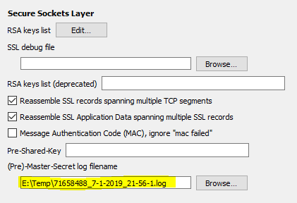
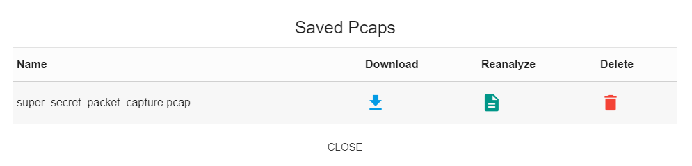

Question 8: Network Traffic Forensics¶
Answer: mary had a little lamb
Solution¶
Obtaining a capture of the network traffic was easy with the packalyzer application, however an analysis soon revealed that the bulk of the traffic was encrypted. Based on the question we assumed this was HTTP/2 traffic. To decode this traffic with Wireshark, we needed to find the appropriate SSL session keys. The obvious place to look for the keys was on the server hosting the packalyzer application.
Step 1: Obtaining the SSL keys¶
The hints from SugarPlum Mary suggested that a good starting point was to look at the source code of the packalyzer site root. After browsing to https://packalyzer.kringlecastle.com we used the Google Chrome -> View page source option and found the following comment in the code:
//File upload Function. All extensions and sizes are validated server-side in app.js
As shown in the following figure, we also used Google Chrome -> Developer tools -> Source to determine that most of the scripts, images and CSS files were accessible from somewhere under http://packalyzer.kringlecastle.com/pub/
After a few guesses we determined that the server-side code was accessible using https://packalyzer.kringlecastle.com/pub/app.js
According to SugarPlum Mary, the file had suspicious-looking development code using environment variables to store SSL keys and open up directories. This was soon verified to be true. Of particular importance were the following code snippets:
const key_log_path = ( !dev_mode || __dirname + process.env.DEV + process.env.SSLKEYLOGFILE )
keylog : key_log_path //used for dev mode to view traffic. Stores a few minutes worth at a time
const dev_mode = true;
if (dev_mode) {
//Can set env variable to open up directories during dev
const env_dirs = load_envs();
} else {
const env_dirs = ['/pub/','/uploads/'];
}
Caution
We lost quite a bit of time at this stage because we forgot that Linux is case-sensitive (dev is not the same as DEV).
We initially found that https://packalyzer.kringlecastle.com/SSLKEYLOGFILE/ returned:
Error: ENOENT: no such file or directory, open '/opt/http2packalyzer_clientrandom_ssl.log/'
This suggests that SSLKEYLOGFILE gets expanded out to packalyzer_clientrandom_ssl.log
Trying https://packalyzer.kringlecastle.com/pub/packalyzer_clientrandom_ssl.log resulted in Error: ENOENT: no such file or directory, open '/opt/http2/pub//packalyzer_clientrandom_ssl.log'. However, https://packalyzer.kringlecastle.com/DEV/packalyzer_clientrandom_ssl.log resulted in what looked like a log containing SSL session keys:
CLIENT_RANDOM 1E58F8926F251276C62A30276185CC827CDAF5E13F737F2AF3534B316CB1345A 73EFC236EB72F5047E0581496A70B9DAF136330B2AD5A37EC96C07F6662C00F726C6C05EC64FF21656A32A9368667F28
CLIENT_RANDOM AE13A9FF12D360A1FDC9E65275CEDA1B38C116A90EE2608480F4F710A8844C65 A1DD204566A4B85C305C6443F37AE14587D09A69540D73D554F09E7F180594457AA0E045D67366B4214D807548BD3A33
CLIENT_RANDOM E2592D4C2A14639EFD01CFB439026C3B2BC06955C18C4C324BCCAF830F1E2EBB 2949F0BC1C030B053C29B4ADE666FA5DF6BECA8D3A0360C5F90A365BE3554E2AABB7C2E1B4CF237505DACF9FB2D471E2
CLIENT_RANDOM 6AF59347F8DD1FE9902A8CBEF515C8DB27E2B64BE42A8F14904C9D6658BE0FB3 D0D880C9AACDD708E28EFE1D44522F6CB509C440E2FF3A0292A905973CBB07189563EB4447EDAFEC9A0F674EEF714742
CLIENT_RANDOM 381371E7B055B2AD1261B65E2CC504CCC361D6281DF6C9941EC3CFE038303901 4C223FD22CBCCCD9A5DC73357329298D020A9372A693342D4BEADD5C881DFE4834C3152269128E184ADB37389CE4FDAF
Step 2: Obtaining and analysing the packet capture¶
We tried using the keys to analyse a capture that we had saved earlier but were unsuccessful. We realised that one of the comments in the code shown above states that it only stores a few minutes worth (of keys) at a time. We needed to download the SSL keys shortly after capturing the traffic.
We then obtained a recent capture (using Packalyzer) and a recent SSL session keys file (using https://packalyzer.kringlecastle.com/DEV/packalyzer_clientrandom_ssl.log). With these two items, we were able to successfully decode the HTTP/2 traffic.
Note
To decode HTTP/2 traffic in Wireshark you need to specify the SSL keys file in the SSL protocol preferences.
After spending some time analysing the traffic we discovered that the information we wanted consisted of JSON data. We created the following Wireshark display filter to display only the packets that contained password information:
json.key == "username"
We then compiled the following table:
| Username | Password |
|---|---|
| pepper | Shiz-Bamer_wabl182 |
| bushy | Floppity_Floopy-flab19283 |
| alabaster | Packer-p@re-turntable192 |
Step 3: Obtaining and analysing Alabaster’s email¶
We logged into the Packalyzer application using Alabaster’s credentials. Under his saved captures we found the following:
We downloaded the capture file and opened it in Wireshark. The capture mainly consisted of SMTP traffic. We followed the TCP stream and found that the capture consisted of a text message followed by a file attachment encoded in base64 format.
The text consisted of the following:
Hey alabaster,
Santa said you needed help understanding musical notes for accessing the vault. He said your favorite key was D. Anyways, the following attachment should give you all the information you need about transposing music.
To analyse the attachment, we utilised an online Base64 Encoder/Decoder. The first few bytes of the output included PDF-1.5 which was a good indicator that the attachment was a PDF file. The online tool also had the ability to save the decoded output which we called alabaster.pdf.
The file included instructions about how to transpose music and included the song Mary Had a Little Lamb.
Using the other leaked credentials¶
The account credentials for Pepper and Bushy that we discovered above, were valid Packalyzer credentials but didn’t seem to contain anything interesting.